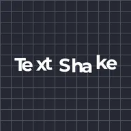
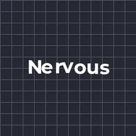
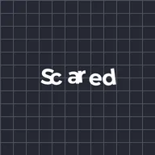
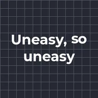
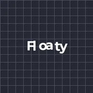
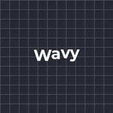
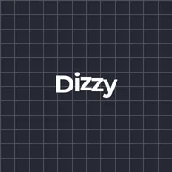
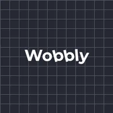

Tekst schudden

Schudt elke letter afzonderlijk, zoals nerveuze dialoog in een game. Schudden drijft tussen plekken, Jitter springt bij elke stap naar een nieuwe plek, Golf laat de letters op en neer deinen, Cirkel beweegt ze in kleine rondjes en Wiebelen kantelt ze heen en weer. Verlaag Schuddende letters om maar een deel van de letters te laten schudden, om de paar momenten opnieuw willekeurig gekozen.
Tekst schudden beweegt elke letter los van de andere, zoals nerveuze dialoog in een game. Kies een Stijl:
- Schudden laat elke letter tussen willekeurige plekken glijden en Jitter springt bij elke stap naar een nieuwe plek. Hoeveelheid is hoe ver in pixels, Snelheid hoeveel nieuwe plekken per seconde, en met Rotatie draaien de letters ook mee.
- Golf laat de letters op en neer deinen, Cirkel beweegt ze in kleine rondjes en Wiebelen kantelt ze heen en weer over de hoek bij Kanteling. Hierbij is Snelheid in golven per seconde (Hz) en verschuift Spreiding de golf van de ene letter naar de volgende.
Schuddende letters onder 100 % laat maar een deel van de letters schudden, en Nieuwe letters elke kiest om de zoveel seconden willekeurig een nieuwe groep. Op basis van schudt elk teken, elk woord of elke regel. Begin en Einde beperken het schudden tot een deel van de tekst, en Seed geeft een ander willekeurig patroon. Snel beginnen? Probeer een voorinstelling: Nerveus, Bang, Onrustig, Zwevend, Golvend, Duizelig of Wiebelig.
Instellingen
| Instelling | Type | Bereik | Standaard |
|---|---|---|---|
| Stijl | Keuze | Schudden, Jitter, Golf, Cirkel, Wiebelen | Jitter |
| Hoeveelheid | Getal | 0 px tot 200 px | 4 px |
| Snelheid | Getal | 0 /s tot 120 /s | 24 /s |
| Snelheid | Getal | 0 Hz tot 20 Hz | 1 Hz |
| Spreiding | Hoek | -360° tot 360° | 30° |
| Rotatie | Hoek | -180° tot 180° | 0° |
| Kanteling | Hoek | -180° tot 180° | 15° |
| Schuddende letters | Getal | 0% tot 100% | 100% |
| Nieuwe letters elke | Getal | 0.05 s tot 10 s | 0.6 s |
| Op basis van | Keuze | Teken, Woord, Regel | Teken |
| Begin | Getal | 0% tot 100% | 0% |
| Einde | Getal | 0% tot 100% | 100% |
| Seed | Getal | 0 tot 1000 | 1 |
Voorinstellingen
Kies er een op de detailpagina van het effect in de Effectenbibliotheek. Elke voorinstelling is een kant-en-klare instelling die je daarna nog kunt aanpassen.

Nerveus
Bang
Onrustig
Zwevend
Golvend
Duizelig
Wiebelig